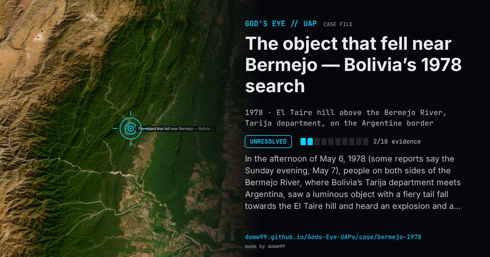

The object that fell near Bermejo — Bolivia’s 1978 search

In the afternoon of May 6, 1978 (some reports say the Sunday evening, May 7), people on both sides of the Bermejo River, where Bolivia’s Tarija department meets Argentina, saw a luminous object with a fiery tail fall towards the El Taire hill and heard an explosion and a sonic boom. The Bolivian army and police searched, scientists from the University of Tarija went to the area, Argentina sent border police, and newspapers in Buenos Aires carried a police chief’s description of a dull metal cylinder about four metres long. The U.S. Embassy in La Paz reported the fall to Washington, and two U.S. Air Force attachés flew to Tarija; the embassy denied any secret recovery. A CIA-released bulletin of May 17, 1978 is headed “Bolivia reports conflict on details of fallen object”. The searches, slowed by the terrain and weather, recovered nothing anyone published. Explanations at the time ranged from a meteorite to space debris; no country reported losing a satellite, no meteorite fall is catalogued there for that date, and the object was never identified.
What was seen
Shape: A luminous cylinder or egg with a flaming tail
Witnesses: Many people along the border; Bolivian Air Force pilots who searched the slope
Duration: Seconds (the fall), followed by an explosion
Sources
- CIA reading room — “Bolivia reports conflict on details of fallen object” (May 17, 1978)
- Nice-Matin, 17 May 1978, and NOSTRA (transcribed)
- Nick Redfern — the lesser-known UFO crash in Bolivia
Browse
- 1970s
- Unresolved
- Tracked object events
- Official government documents
- Many independent witnesses
- Lights and fireballs
- Spheres and orbs
- Cylinders and cigar shapes